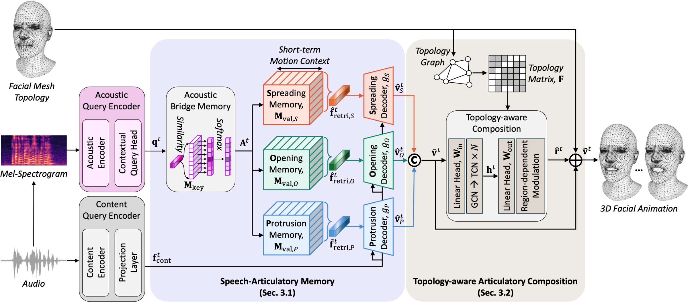
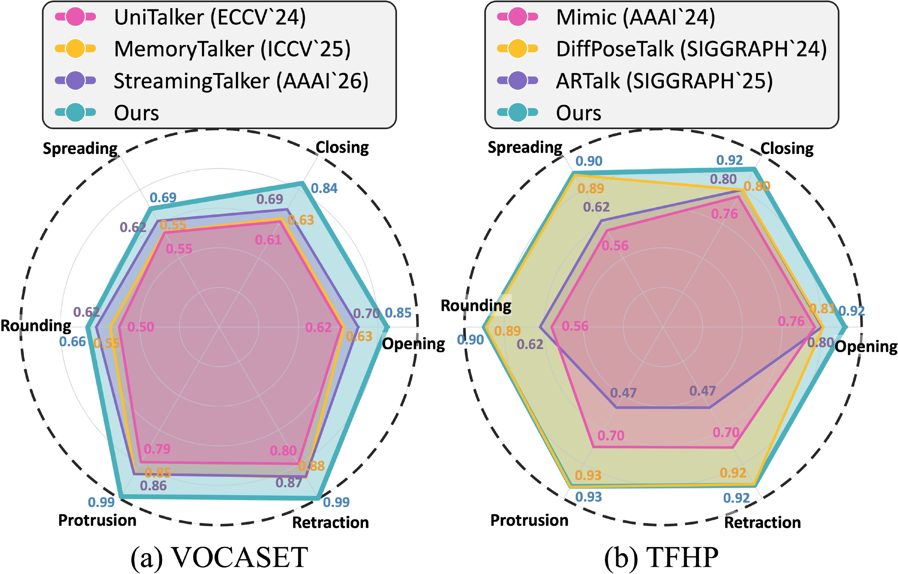
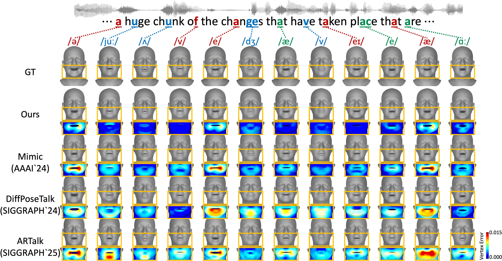
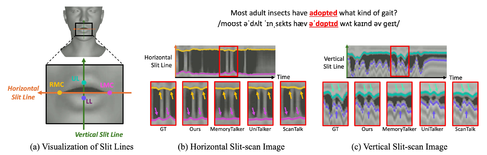
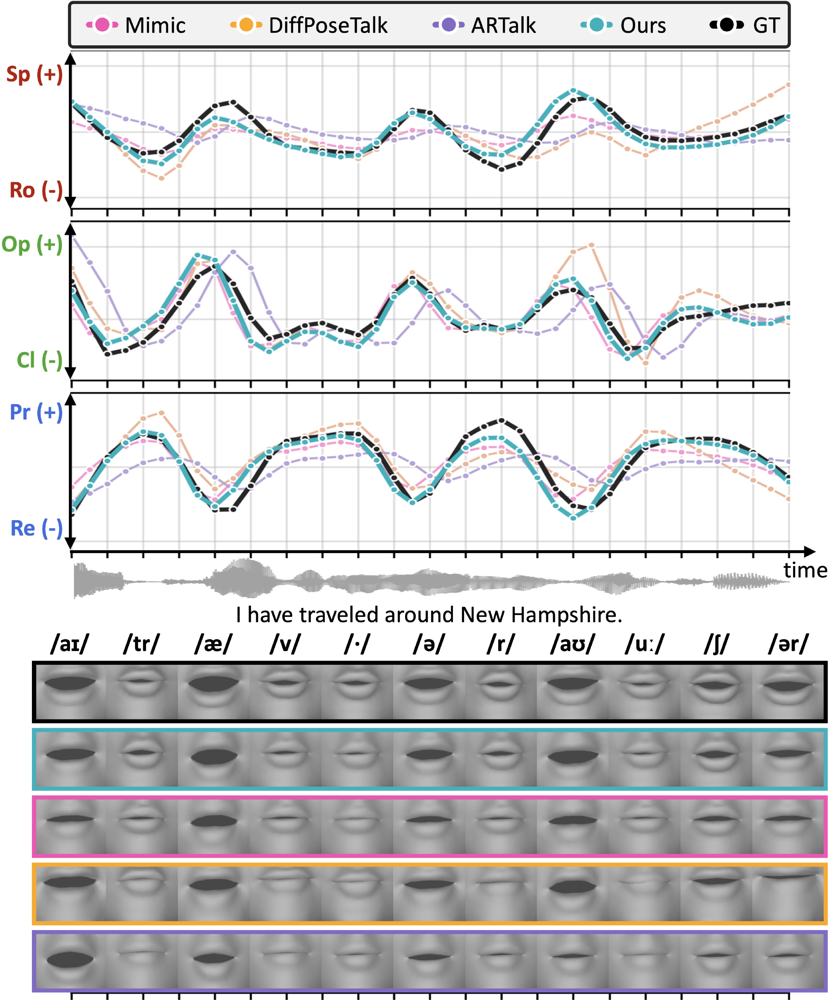

Recent progress in speech-driven 3D facial animation has improved vertex-level reconstruction quality, but speech-consistent visible articulation remains difficult. This is because speech production follows structured and constrained articulators' coordination and the mapping from acoustics to motion is inherently one-to-many. Motivated by the structured patterns of visible articulation, we propose a novel articulation-aware framework that models visible speech through directional articulatory motions and composes them into surface-consistent 3D facial motion. To represent visible articulation with three directional articulatory motions, spreading, opening, and protrusion, we propose a Speech–Articulatory Memory (SAM) that captures the correspondence between speech and these motions under phonetic context through retrieval and decoding based on a key-value memory structure. Then, a Topology-aware Articulatory Composition (TAC) integrates the predicted directional articulatory motions under mesh topology to produce surface-consistent 3D facial motion. Experiments on VOCASET and TFHP show that our method achieves state-of-the-art performance on standard reconstruction metrics and improves visible articulatory distance and velocity errors for lip articulation, while a user study confirms clear preference in lip sync and realism.
Please turn on the sound.

Given a facial template mesh, we represent visible articulation through three directional articulatory motions grounded in speech production: horizontal spreading ($S$), vertical opening ($O$), and depth-wise protrusion ($P$). The framework consists of two parts.
Speech–Articulatory Memory (SAM). An acoustic query, encoded from the mel-spectrogram over a local phonetic window, addresses a learnable acoustic bridge memory. The resulting addressing weights retrieve short-term motion feature sequences from three direction-specific value memories. The retrieved features are then refined by cross-attention with HuBERT content features, predicting a directional articulatory motion for each of $S$, $O$, and $P$. A memory store loss aligns the retrieved features with reference motion features, reducing one-to-many ambiguity in acoustic-to-motion mapping.
Topology-aware Articulatory Composition (TAC). The three directional motions are stacked and composed over the facial surface. A graph convolution on the mesh adjacency captures spatial coupling across vertices, a temporal convolutional network captures short-term dynamics, and a learnable region-adaptive gate controls how strongly each facial region absorbs the topology-aware residual. A graph Laplacian loss enforces local surface consistency.
Our method achieves the lowest FVE, LVE, and LDTW on both VOCASET and TFHP, showing that articulatory modeling improves lip-region reconstruction while preserving overall reconstruction quality.
| Dataset | Method | FVE ↓ | LVE ↓ | FDD ↓ | LDTW ↓ |
|---|---|---|---|---|---|
| VOCASET | FaceFormer | 0.878 | 0.346 | 0.143 | 0.186 |
| CodeTalker | 0.913 | 0.397 | 0.160 | 0.204 | |
| SelfTalk | 0.844 | 0.305 | 0.148 | 0.174 | |
| Imitator | 0.898 | 0.384 | 0.179 | 0.199 | |
| ScanTalk | 0.878 | 0.310 | 0.152 | 0.168 | |
| UniTalker | 0.820 | 0.282 | 0.101 | 0.188 | |
| MemoryTalker | 0.810 | 0.250 | 0.127 | 0.151 | |
| StreamingTalker | 0.782 | 0.272 | 0.191 | 0.169 | |
| Ours | 0.771 | 0.235 | 0.097 | 0.132 | |
| TFHP | Mimic | 0.106 | 0.116 | 0.619 | 0.329 |
| DiffPoseTalk | 0.176 | 0.159 | 0.321 | 0.382 | |
| ARTalk | 0.206 | 0.164 | 0.581 | 0.385 | |
| Ours | 0.100 | 0.108 | 0.578 | 0.318 |
We measure inter-commissural width (ICW, lip spreading), inter-labial distance (ILD, lip opening), and lip protrusion (LP) from lip-surface anchors. Our method achieves the lowest distance errors on all three measures and the lowest velocity errors on ILD and LP.
| Method | Distance Error | Velocity Error | ||||
|---|---|---|---|---|---|---|
| ICW ↓ | ILD ↓ | LP ↓ | ICW ↓ | ILD ↓ | LP ↓ | |
| FaceFormer | 1.764 | 4.558 | 2.429 | 0.581 | 1.850 | 1.230 |
| CodeTalker | 1.725 | 4.777 | 2.808 | 0.552 | 2.009 | 1.343 |
| SelfTalk | 1.680 | 4.031 | 2.470 | 0.544 | 1.958 | 1.275 |
| Imitator | 1.731 | 4.851 | 2.526 | 0.571 | 1.873 | 1.205 |
| ScanTalk | 1.737 | 4.034 | 2.485 | 0.558 | 1.854 | 1.285 |
| UniTalker | 1.585 | 3.887 | 2.532 | 0.541 | 1.627 | 1.211 |
| MemoryTalker | 1.626 | 3.679 | 2.347 | 0.560 | 1.813 | 1.224 |
| StreamingTalker | 1.658 | 3.955 | 2.478 | 0.507 | 1.645 | 1.187 |
| Ours | 1.568 | 3.407 | 2.346 | 0.521 | 1.613 | 1.177 |
Best in bold, second best underlined.

Beyond per-frame accuracy, we check whether each method preserves the relative magnitude of directional articulatory motions. For each paired motion (e.g., opening–closing), we compare predicted and ground-truth magnitudes and plot them relative to the ground truth (1.0). Our method stays closest to the ground truth across all directions, indicating more balanced directional articulation.

Mesh renderings (top) and per-vertex L1 error maps against the ground truth (bottom, 0 in blue to 0.015 in red) on TFHP at phoneme-aligned frames. Our method produces distinct articulatory configurations at salient phonemes with low errors across the lips and lower face, while the upper face remains comparable to competing methods.

(a) Lip ROI and landmarks defining the horizontal (LMC–RMC) and vertical (UL–LL) slit lines. (b) Horizontal and (c) vertical slit-scans over time for the utterance adopted. Our trajectories show distinct rounding/spreading and opening/closing patterns with steeper slopes at articulatory transitions, matching the ground truth.

Trajectories along spreading–rounding, opening–closing, and protrusion–retraction, aligned with the speech waveform and per-phoneme mesh renderings. Baselines deviate in direction-specific ways: flat opening trajectories at opening-dominant phonemes (e.g., /aɪ/, /æ/, /aʊ/), attenuated protrusion at protrusion-dominant phonemes (e.g., /tr/, /v/), or noisy spreading at high-magnitude segments. Our method closely follows the ground truth in all three directions.
Pairwise A/B preference study on VOCASET with 24 valid participants (15 clips per competitor). Our method is preferred over every competitor, with average preference of 70.3% for lip sync and 70.7% for realism (one-sided binomial test, $p<0.0001$ for every competitor).
| Ours vs. | Lip Sync (% Ours) | Realism (% Ours) |
|---|---|---|
| FaceFormer | 71.3 | 65.7 |
| CodeTalker | 72.2 | 75.0 |
| Imitator | 77.8 | 73.1 |
| ScanTalk | 73.1 | 79.6 |
| UniTalker | 65.7 | 67.6 |
| MemoryTalker | 63.8 | 68.5 |
| StreamingTalker | 68.5 | 65.7 |
@inproceedings{kim2026seeingspeech,
author = {Kim, Hyung Kyu and Hwang, Byungchan and Kim, Hak Gu},
title = {Seeing Speech: Learning Visible Articulatory Dynamics for Speech-Driven 3D Facial Animation},
booktitle = {Advances in Neural Information Processing Systems (NeurIPS)},
year = {2026}
}